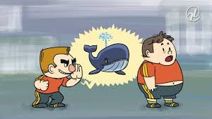
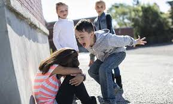
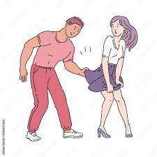
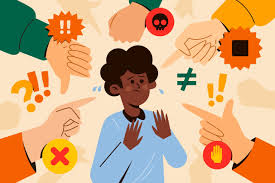
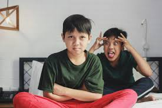
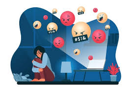

Definição
A palavra bullying tem origem na língua inglesa e contém o radical bully, que significa valentão. O sufixo -ing (acrescido ao prefixo bully-) denota continuidade, constância, o que nos ajuda a entender com maior precisão o significado do termo referido.
Tal prática é caracterizada por constantes agressões, que podem ser de ordem física, verbal e psicológica (geralmente ocorrem as três juntas), em que um indivíduo ou um grupo humilha, xinga, expõe e agride um outro indivíduo. Só podemos chamar de bullying o comportamento sistemático e constante, de modo que episódios isolados de agressão física ou verbal não são caracterizados dessa forma. Classificamos como bullying um comportamento desenvolvido por crianças e adolescentes, sendo que, entre os adultos, a prática similar a isso é chamada de assédio moral.
Tipos de Bullying
Bullying Físico
Prática de agressões através da imposição de força física. Envolve: Socos, Tapas, Chutes, Enforcamento, Imobilização, Puxões de cabelo

Bullying Moral
Agressões que envolvem questões morais sociais ou particulares. Envolve: Calúnia e difamação, Insinuações, Exposição a conteúdos inadequados ou indesejados
Bullying Psicológico
Agressões que visam intervir ou controlar o modo de ser e estar das vítimas. Envolve: Intimidações, Ameaças, Chantagens
Bullying Material
Violência contra o patrimônio das vítimas com o objetivo de diminuí-las ou humilhá-las. Envolve: Destruição, roubo ou furto de patrimônio
Bullying Verbal
Agressões através de palavras (oral ou escrita). Envolve: Xingamentos, Apelidos, Pichações
Bullying Social
Agressão através da alienação total ou parcial do convívio social. Envolve: Exclusão ou impedimento à participação em eventos sociais ou grupos.
Bullying Sexual
Agressão de caráter sexual ou que envolvam a sexualidade. Envolve: Exposição da ou à nudez, Toques, Insinuações, Assédios, Imposição de comportamentos
Bullying Preconceituoso
Agressões pautadas em preconceitos (gênero, crença, raça, cor, etnia, classe social, sexualidade, nacionalidade, região, etc.) Envolve: Xingamentos, Apelidos, Intolerância
Bullying Familiar
As agressões tendem a ser comuns a outros tipos de bullying, mas vítimas e agressores fazem parte do mesmo núcleo familiar. Envolve: Desaprovação, Constrangimentos, Inadequação, Comparações
Bullying Cyberbullying
Agressões equivalentes a outros tipos de bullying, mas realizadas através de redes sociais ou em ambiente virtual. Envolve: Exposição indevida da imagem, Utilização de ferramentas virtuais com o intuito de humilhar a vítima.
Efeitos do Bullying
O bullying pode trazer diversas consequências em suas vítimas. Normalmente, as agressões e a exclusão do grupo levam o indivíduo que sofre a um quadro de isolamento social. Devido aos maus tratos e ao sentimento de não pertencimento ao grupo, a vítima vê-se como alguém estranho, diferente e que não pertence àquele local. A partir daí, inicia-se um quadro de isolamento que a faz querer sair daquele lugar para escapar de seus problemas.
Ao não conseguir escapar e não encontrar apoio entre os amigos (muitas vezes as vítimas não conseguem desenvolver laços afetivos no seu ambiente social por conta das agressões) e os familiares (normalmente elas não comentam o que se passa com a família por medo), o quadro de isolamento começa a causar danos psicológicos que podem levar à depressão, ao transtorno de ansiedade, à síndrome do pânico e a outros distúrbios psiquiátricos, além de gerar traumas que acompanharão a vítima por toda a sua vida se não tratados adequadamente.
Como previnir o Bullying
Os melhores meios de combate ao bullying são a conscientização e o diálogo. Conversas dos pais e das mães com seus filhos e filhas, campanhas de conscientização nas escolas e diálogo dos profissionais da educação com os estudantes são as melhores formas para acabar com essa prática.
Canais Oficiais de Denúncia
- Ouvidoria: 0800-0419192
- Disque Direitos Humanos: 100
- Disque Denúncia: 181
- SAMU (Serviço de Atendimento Móvel de Urgência): 192
- Emergência Policial: 190
- Site Escola Segura: Link